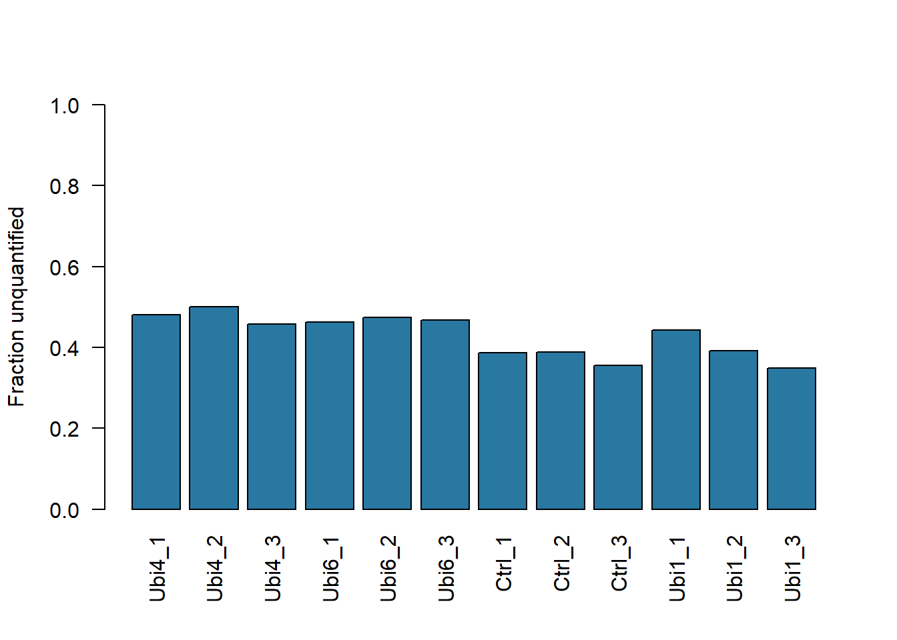
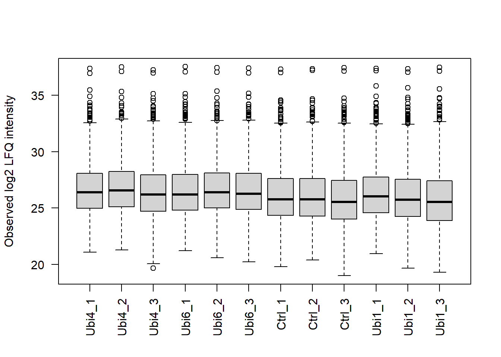
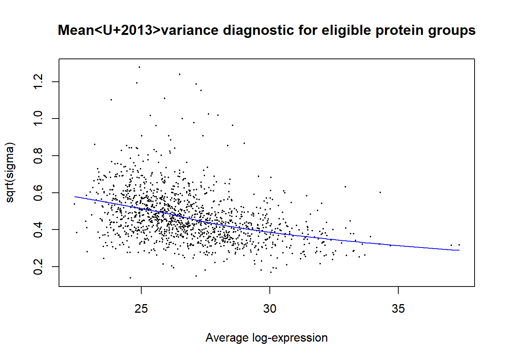
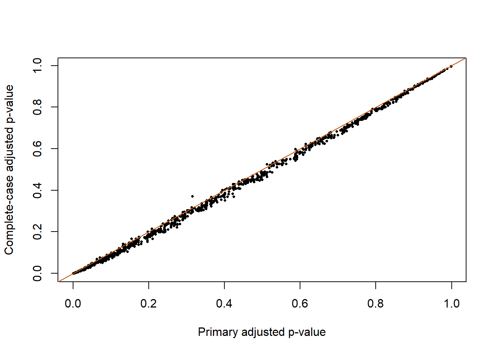

Show R code
helper_dir <- if (dir.exists("R")) "R" else "../R"
source(file.path(helper_dir, "case_helpers.R"))Case 2: Real LFQ measurements and limma
Which protein groups are more strongly enriched with a four-unit ubiquitin bait than with the control in this experiment? This is an affinity-enrichment comparison, not a comparison of whole-cell protein concentrations. The distinction changes the biological interpretation of every result.
You will audit protein-group flags, interpret zero LFQ values as unquantified observations, compare groups using observed intensities, and assess sensitivity to missingness restrictions. Allow 2–3 hours, after B08/B12 and P18.
The UbiLength example distributed with DEP contains 3,006 protein groups and twelve label-free quantification (LFQ) columns: control, Ubi1, Ubi4 and Ubi6, each with three replicate labels. The experiment investigates ubiquitin-chain interaction enrichment, described in the DEP workflow with its source reference to Zhang et al..
The local CSV is a documented format/column extract of the pinned DEP data files. It preserves original LFQ values, gene names and exclusion flags. The original MaxQuant measurements have already undergone upstream identification and LFQ processing. This lesson does not repeat spectrum identification, peptide-level uncertainty modelling or the complete DEP workflow. Read the data notes and licence for attribution and preparation.
The labels are enrichment-experiment replicates; they are not independent animal cohorts. Treat the reported precision as repeatability within the labelled enrichment experiment; this table alone does not establish biological sampling across independent cell cultures. A protein group can contain several compatible identifiers. Retain that group identity rather than silently selecting a gene symbol and claiming unique identification. Mechanistic binding claims need evidence beyond this processed abundance table.
Install limma once using the Bioconductor release appropriate to your R version:
The example was checked with R 4.4.1 and limma 3.62.2. Inputs are stored locally; neither installation nor downloading occurs during rendering.
if (!requireNamespace("limma", quietly = TRUE))
stop("Install limma with BiocManager before running Case 2.")
raw <- case_read("ubiquitin_lfq.csv.gz")
meta <- case_read("ubiquitin_samples.csv")
intensity_cols <- paste0("LFQ.intensity.", meta$label)
stopifnot(!anyDuplicated(meta$label), all(intensity_cols %in% names(raw)))
lfq <- as.matrix(raw[, intensity_cols])
rownames(lfq) <- raw$feature_id
colnames(lfq) <- meta$label
stopifnot(all(lfq >= 0), !anyNA(lfq))
knitr::kable(meta, row.names = FALSE)| label | condition | replicate |
|---|---|---|
| Ubi4_1 | Ubi4 | 1 |
| Ubi4_2 | Ubi4 | 2 |
| Ubi4_3 | Ubi4 | 3 |
| Ubi6_1 | Ubi6 | 1 |
| Ubi6_2 | Ubi6 | 2 |
| Ubi6_3 | Ubi6 | 3 |
| Ctrl_1 | Ctrl | 1 |
| Ctrl_2 | Ctrl | 2 |
| Ctrl_3 | Ctrl | 3 |
| Ubi1_1 | Ubi1 | 1 |
| Ubi1_2 | Ubi1 | 2 |
| Ubi1_3 | Ubi1 | 3 |
Remove decoy matches, potential contaminants and groups identified only by site. This last exclusion is a stated conservative teaching choice. Record how many groups each step removes. It changes the eligible population, so it belongs in the methods.
total decoy contaminant site_only retained
1 3006 31 34 40 2907Flags can overlap; summing exclusion counts is not necessarily the number of removed groups. A contaminant flag describes the analytical classification, not proof that a protein cannot exist in the studied biology.
In this LFQ table, a zero means no quantified intensity, not a measured absence of protein. Convert it to NA before logarithms. Do not add 1 and treat a collection of zeros as precise low-abundance observations.


The boxplot summarizes observed values only. A shift in the boxplot can reflect enrichment, processing or a change in which proteins were detected. LFQ is already an upstream quantification procedure; blindly centering every sample could remove an enrichment shift of interest. The primary analysis uses the provided log2 LFQ scale without another global centering step.
We focus on Ubi4 versus control, retaining a group only if at least two of three intensities are observed in each condition. Other bait conditions remain available for later exploration but do not enter this contrast. This filter deliberately excludes some potentially strong all-or-none enrichments: an absent control group cannot provide its own observed mean and variance.
use <- meta$condition %in% c("Ctrl", "Ubi4")
m <- meta[use, ]
y <- loglfq[, use, drop = FALSE]
m$condition <- factor(m$condition, levels = c("Ctrl", "Ubi4"))
observed <- sapply(levels(m$condition), function(g)
rowSums(!is.na(y[, m$condition == g, drop = FALSE])))
keep <- rowSums(observed >= 2) == 2
detection_patterns <- table(Ctrl = observed[, "Ctrl"], Ubi4 = observed[, "Ubi4"])
detection_patterns Ubi4
Ctrl 0 1 2 3
0 626 88 61 96
1 240 3 0 10
2 109 11 19 28
3 248 59 112 1197 eligible_groups primary_groups all_six_observed
1 2907 1356 1197The detection table is part of the result, not merely a hurdle before testing. A Ubi4-only pattern can motivate a targeted validation assay, but cannot be interpreted by a test that assumes six observed values. Missingness may depend on abundance and condition; observed-value inference is conditional on the selected measurable subset and does not solve that selection problem.
design <- model.matrix(~ condition, m)
stopifnot(qr(design)$rank == ncol(design), identical(colnames(y), m$label))
fit <- limma::lmFit(y[keep, ], design)
fit <- limma::eBayes(fit, trend = TRUE)
ans <- limma::topTable(fit, coef = "conditionUbi4", number = Inf,
adjust.method = "BH", sort.by = "P")
ans$feature_id <- rownames(ans)
ans$protein_ids <- info$Protein.IDs[match(ans$feature_id, info$feature_id)]
ans$gene_names <- info$Gene.names[match(ans$feature_id, info$feature_id)]
knitr::kable(head(ans[, c("feature_id", "gene_names", "logFC", "AveExpr", "adj.P.Val")], 10),
digits = 3, row.names = FALSE)| feature_id | gene_names | logFC | AveExpr | adj.P.Val |
|---|---|---|---|---|
| PG1669 | RPS27A | 6.888 | 31.853 | 0.000 |
| PG2166 | HUWE1 | 5.308 | 28.478 | 0.000 |
| PG1843 | SQSTM1 | 4.440 | 28.136 | 0.000 |
| PG0503 | PIK3C2B | 3.603 | 27.243 | 0.000 |
| PG2320 | TBC1D15 | 3.079 | 26.776 | 0.000 |
| PG2514 | WRNIP1 | 4.156 | 26.630 | 0.000 |
| PG0449 | ZNF451 | 2.237 | 26.670 | 0.000 |
| PG0866 | PSMD11 | 2.681 | 25.252 | 0.000 |
| PG0950 | PSMD3 | 1.775 | 25.683 | 0.000 |
| PG1402 | PSMC2 | 1.903 | 25.738 | 0.001 |
Limma mean–variance diagnostic for protein groups with at least two observed Ubi4 and two observed control intensities.

The coefficient is Ubi4 minus control in log2 intensity. Limma moderates variances by borrowing information across eligible protein groups; trend = TRUE allows the prior variance to depend on average intensity. This increases stability with small replicate numbers, but cannot reconstruct missing observations or guarantee that intensity-dependent selection is ignorable. Inspect the diagnostic and the original six values for any highlighted group.
complete <- rowSums(is.na(y)) == 0
strict_fit <- limma::eBayes(limma::lmFit(y[complete, ], design), trend = TRUE)
strict <- limma::topTable(strict_fit, coef = "conditionUbi4", number = Inf, sort.by = "none")
shared <- intersect(rownames(ans), rownames(strict))
ia <- match(shared, rownames(ans)); ib <- match(shared, rownames(strict))
data.frame(primary_tested = nrow(ans), strict_tested = nrow(strict), shared = length(shared),
effect_correlation = cor(ans$logFC[ia], strict$logFC[ib])) primary_tested strict_tested shared effect_correlation
1 1356 1197 1197 1
For groups observed in all six samples, the fitted group means can agree closely while moderated uncertainty and adjustment differ: the variance prior and testing universe changed. The stricter analysis also favors readily quantified proteins. Neither analysis establishes that missing groups have no response. Report the eligible universe with the effect estimates.
The estimated effect concerns affinity enrichment and a group of compatible protein identities. All-or-none detection is not a measured zero mean in controls. A targeted measurement, an orthogonal pull-down or an independent binding experiment can test different parts of the hypothesis. Changing bait or missingness filters changes the comparison universe. Median centering assumes comparable global locations after processing; if a genuine widespread enrichment shift is present, it can absorb part of that shift. State this assumption before treating centered results as preferable.
Use the Case 2 assignment and include the flag counts, detection table, primary contrast, selected universe and complete-case sensitivity. Record that zero-to-NA recoding is a representation of the supplied quantification convention, not an imputation procedure.
Consult the limma documentation for model details. Continue to Case 3 for actual animal metadata and matched assays.